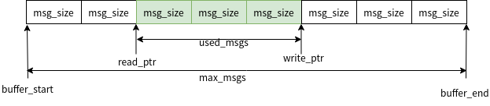

数据传递-消息队列¶
使用¶
API¶
Message queue的API有下面10个全部声明在kernel.h中，每个函数都有参数struct k_msgq *msgq.都是指该函数操作或者使用的msgq后面就不在单独列出说明
void k_msgq_init(struct k_msgq q, char buffer, size_t msg_size, u32_tmax_msgs);
作用：初始化一个msgq, 内存由使用者分配
buffer: msgq的buffer，需要由使用者分配，大小为msg_size*max_msgs
msg_size: msgq中每个message的大小 max_mags: msgq中最多容纳的message数量
__syscall int k_msgq_alloc_init(struct k_msgq *msgq, size_t msg_size,u32_t max_msgs);
作用：初始化一个msgq, 内存由msgq从线程池中分配
msg_size: msgq中每个message的大小
max_mags: msgq中最多容纳的message数量
int k_msgq_cleanup(struct k_msgq* msgq);
作用：释放k_msgq_alloc_init分配msgq内存
__syscall int k_msgq_put(struct k_msgq *msgq, void*data, s32_t timeout);
作用：将message放入到msgq
data：message数据
timeout:等待时间，单位ms。K_NO_WAIT不等待, K_FOREVER一直等
返回值：放入成功返回0
__syscall int k_msgq_get(struct k_msgq *msgq, void* data, s32_t timeout);
作用：从msgq读出message
data：message数据
timeout: 等待时间，单位ms。K_NO_WAIT不等待,K_FOREVER一直等 返回值：读出成功返回0
__syscall int k_msgq_peek(struct k_msgq *msgq, void* data);
作用：peek msgq
data: peek到的message
返回： peek到数据返回0
__syscall void k_msgq_purge(struct k_msgq *msgq);
作用：清空msgq中的message
__syscall u32_t k_msgq_num_free_get(struct k_msgq *msgq);
作用：获取msgq还可以放多少个message
返回值：空闲数目
__syscall void k_msgq_get_attrs(struct k_msgq *msgq, struct k_msgq_attrs* attrs);
作用：获取msgq的信息，也就是message的大小，总数量和已使用数量，都放在struct k_msgq_attrs 内
__syscall u32_t k_msgq_num_used_get(struct k_msgq *msgq);
作用：获取msgq中有多少个message 返回值：message数目
使用说明¶
可以在ISR中put msgq.也可在ISR内get msgq，但不能等待。 msgq必须事先指定message的大小和个数。大小需要是2的幂对齐。 msgq用于异步传输小数据。msgq在读写时需要锁中断，因此不建议用来传输大数据。
初始化¶
初始化一个queue, 由用户分配内存
struct data_item_type { //message的数据结构
u32_t field1;
u32_t field2;
u32_t field3;
};
char __aligned(4) my_msgq_buffer[10 * sizeof(data_item_type)];
struct k_msgq my_msgq;
k_msgq_init(&my_msgq, my_msgq_buffer, sizeof(data_item_type), 10);
由message queue自己在线程池中分配
k_msgq_alloc_init(&my_msgq, sizeof(data_item_type), 10);
写入message¶
运行在线程或者ISR中写入message，ISR中写入时不能发生等待。示例如下
void producer_thread(void)
{
struct data_item_t data;
while (1) {
/* create data item to send (e.g. measurement, timestamp, ...) */
data = ...
/* send data to consumers */
while (k_msgq_put(&my_msgq, &data, K_NO_WAIT) != 0) {
/* message queue is full: purge old data & try again */
//这里purge并不是必要步骤，是否需要进行purge根据实际应用由用户自己选择
k_msgq_purge(&my_msgq);
}
/* data item was successfully added to message queue */
}
}
读message¶
可以将message从msgq读出, 之后msgq中不再有该message
void consumer_thread(void)
{
struct data_item_t data;
while (1) {
/* get a data item */
k_msgq_get(&my_msgq, &data, K_FOREVER);
/* process data item */
...
}
}
也可以只是peek，该message任然保留在msgq中
void consumer_thread(void)
{
struct data_item_t data;
while (1) {
/* read a data item by peeking into the queue */
if(0 == k_msgq_peek(&my_msgq, &data)){
/* process data item */
}
...
}
}
实现¶
msgq的实现代码在zephyr/kernel/msg_q.c中，msgq是以ringbuffer的模式进行管理，在初始化的时候建立ringbuffer，读写数据时都是以固定的单位大小从ringbuffer内读写数据。 msgq的数据结构如下
struct k_msgq {
_wait_q_t wait_q; //wait_q用于控制msgq的等待
struct k_spinlock lock; //msgq多线程保护锁
size_t msg_size; // message的大小
u32_t max_msgs; // msgq最大容纳message的个数
char *buffer_start; //msgq ringbuffer的开始地址
char *buffer_end; //msgq ringbuffer的结束地址
char *read_ptr; //msgq ringbuffer的读指针
char *write_ptr; //msgq ringbuffer的写指针
u32_t used_msgs; //msgq中有效message的个数
u8_t flags; //msgq的ringbuffer从线程池分配标志
};
示意图 如下，每读或者写一个message，读写指针就向前移动msg_size

初始化/释放¶
初始化msgq就是对struct_msgq中的各成员进行初始化
void k_msgq_init(struct k_msgq *msgq, char *buffer, size_t msg_size,
u32_t max_msgs)
{
//初始化各成员
msgq->msg_size = msg_size;
msgq->max_msgs = max_msgs;
msgq->buffer_start = buffer;
msgq->buffer_end = buffer + (max_msgs * msg_size);
msgq->read_ptr = buffer;
msgq->write_ptr = buffer;
msgq->used_msgs = 0;
msgq->flags = 0; // msgq ringbuffer是由使用者分配，这里设为0
z_waitq_init(&msgq->wait_q); //初始化msgq的wait_q
msgq->lock = (struct k_spinlock) {};
z_object_init(msgq);
}
k_msgq_alloc_init->z_impl_k_msgq_alloc_init, msgq内存从线程池中分配，再使用k_msgq_init初始化
int z_impl_k_msgq_alloc_init(struct k_msgq *msgq, size_t msg_size,
u32_t max_msgs)
{
void *buffer;
int ret;
size_t total_size;
//计算msg_size乘max_msgs，并检查是否溢出，实际调用的是__builtin_mul_overflow
if (size_mul_overflow(msg_size, max_msgs, &total_size)) {
ret = -EINVAL;
} else {
//从线程池中分配msgq的ringbuffer 内存
buffer = z_thread_malloc(total_size);
if (buffer != NULL) {
//初始化各变量
k_msgq_init(msgq, buffer, msg_size, max_msgs);
//使用K_MSGQ_FLAG_ALLOC在flags中标识ringbuffer是从线程池中分配
msgq->flags = K_MSGQ_FLAG_ALLOC;
ret = 0;
} else {
ret = -ENOMEM;
}
}
return ret;
}
如果msgq是从线程池中分配的内存，可以使用k_msgq_cleanup将其释放
int k_msgq_cleanup(struct k_msgq *msgq)
{
//如果还有thread在等待msgq，说明不能释放，退出
CHECKIF(z_waitq_head(&msgq->wait_q) != NULL) {
return -EBUSY;
}
//判断alloc标志，并释放内存
if ((msgq->flags & K_MSGQ_FLAG_ALLOC) != 0) {
k_free(msgq->buffer_start);
msgq->flags &= ~K_MSGQ_FLAG_ALLOC;
}
return 0;
}
mssage操作¶
写msgq¶
k_msgq_put->z_impl_k_msgq_put
int z_impl_k_msgq_put(struct k_msgq *msgq, void *data, s32_t timeout)
{
//isr内写msgq不能等
__ASSERT(!arch_is_in_isr() || timeout == K_NO_WAIT, "");
struct k_thread *pending_thread;
k_spinlock_key_t key;
int result;
key = k_spin_lock(&msgq->lock);
if (msgq->used_msgs < msgq->max_msgs) {
//msgq中ringbuffer有空间
//检查是否有thread在等待读取msgq的message
pending_thread = z_unpend_first_thread(&msgq->wait_q);
if (pending_thread != NULL) {
//有线程在等message，直接将该数据提供给等待线程
(void)memcpy(pending_thread->base.swap_data, data,
msgq->msg_size);
//等待线程拿到数据后，让等待线程ready，并重新调度
arch_thread_return_value_set(pending_thread, 0);
z_ready_thread(pending_thread);
z_reschedule(&msgq->lock, key);
return 0;
} else {
//没有线程需要数据，则将数据放入ringbuffer
(void)memcpy(msgq->write_ptr, data, msgq->msg_size);
msgq->write_ptr += msgq->msg_size;
if (msgq->write_ptr == msgq->buffer_end) {
msgq->write_ptr = msgq->buffer_start;
}
//更新msgq剩余的message数
msgq->used_msgs++;
}
result = 0;
} else if (timeout == K_NO_WAIT) {
//msgq ringbuffer满，且不等待就立即退出
result = -ENOMSG;
} else {
//msgq 满，将message放入swap_data，等待其它thread来读
_current->base.swap_data = data;
return z_pend_curr(&msgq->lock, key, &msgq->wait_q, timeout);
}
k_spin_unlock(&msgq->lock, key);
return result;
}
读msgq¶
k_msgq_get->z_impl_k_msgq_get
int z_impl_k_msgq_get(struct k_msgq *msgq, void *data, s32_t timeout)
{
//isr内读msgq不能等
__ASSERT(!arch_is_in_isr() || timeout == K_NO_WAIT, "");
k_spinlock_key_t key;
struct k_thread *pending_thread;
int result;
key = k_spin_lock(&msgq->lock);
if (msgq->used_msgs > 0) {
//ringbuffer中有数据，直接从ringbuffer中读出message
(void)memcpy(data, msgq->read_ptr, msgq->msg_size);
msgq->read_ptr += msgq->msg_size;
if (msgq->read_ptr == msgq->buffer_end) {
msgq->read_ptr = msgq->buffer_start;
}
//更新msgq剩余的message数
msgq->used_msgs--;
//此时ringbuffer有空闲空间，如果有thead在等待写msgq，则在这里写入
pending_thread = z_unpend_first_thread(&msgq->wait_q);
if (pending_thread != NULL) {
/* add thread's message to queue */
(void)memcpy(msgq->write_ptr, pending_thread->base.swap_data,
msgq->msg_size);
msgq->write_ptr += msgq->msg_size;
if (msgq->write_ptr == msgq->buffer_end) {
msgq->write_ptr = msgq->buffer_start;
}
//更新msgq剩余的message数
msgq->used_msgs++;
//等待写入msgq的thread在写入msgq后变为ready，并重新调度
arch_thread_return_value_set(pending_thread, 0);
z_ready_thread(pending_thread);
z_reschedule(&msgq->lock, key);
return 0;
}
result = 0;
} else if (timeout == K_NO_WAIT) {
/msgq ringbuffer空，且不等待就立即退出
result = -ENOMSG;
} else {
//msgq 空，将message放入swap_data，等待其它thread来写
_current->base.swap_data = data;
return z_pend_curr(&msgq->lock, key, &msgq->wait_q, timeout);
}
k_spin_unlock(&msgq->lock, key);
return result;
}
peek msgq¶
也可以通过peek读message，该方式不会将message从msgq的ringbuffer中删除 k_msgq_peek->z_impl_k_msgq_peek
int z_impl_k_msgq_peek(struct k_msgq *msgq, void *data)
{
k_spinlock_key_t key;
int result;
key = k_spin_lock(&msgq->lock);
if (msgq->used_msgs > 0) {
//ringbuffer中有数据直接copy出去
(void)memcpy(data, msgq->read_ptr, msgq->msg_size);
result = 0;
} else {
//ringbuffer中有无数据返回错误
result = -ENOMSG;
}
k_spin_unlock(&msgq->lock, key);
return result;
}
清空msgq¶
当不需要msgq中的数据时可以使用k_msgq_purge清空 k_msgq_purge->z_impl_k_msgq_purge
void z_impl_k_msgq_purge(struct k_msgq *msgq)
{
k_spinlock_key_t key;
struct k_thread *pending_thread;
key = k_spin_lock(&msgq->lock);
//清空ringbuffer前，会先让等待读msgq的thead将message读走
while ((pending_thread = z_unpend_first_thread(&msgq->wait_q)) != NULL) {
arch_thread_return_value_set(pending_thread, -ENOMSG);
z_ready_thread(pending_thread);
}
//复位 ringbuffer
msgq->used_msgs = 0;
msgq->read_ptr = msgq->write_ptr;
z_reschedule(&msgq->lock, key);
}
获取msgq信息¶
获取msgq的信息函数实现很简单结合前面k_msgq的结构体很容易理解，这里就不再注释分析了
void z_impl_k_msgq_get_attrs(struct k_msgq *msgq, struct k_msgq_attrs *attrs)
{
attrs->msg_size = msgq->msg_size;
attrs->max_msgs = msgq->max_msgs;
attrs->used_msgs = msgq->used_msgs;
}
static inline u32_t z_impl_k_msgq_num_free_get(struct k_msgq *msgq)
{
return msgq->max_msgs - msgq->used_msgs;
}
static inline u32_t z_impl_k_msgq_num_used_get(struct k_msgq *msgq)
{
return msgq->used_msgs;
}
参考¶
https://gcc.gnu.org/onlinedocs/gcc/Integer-Overflow-Builtins.html https://docs.zephyrproject.org/latest/reference/kernel/data_passing/message_queues.html